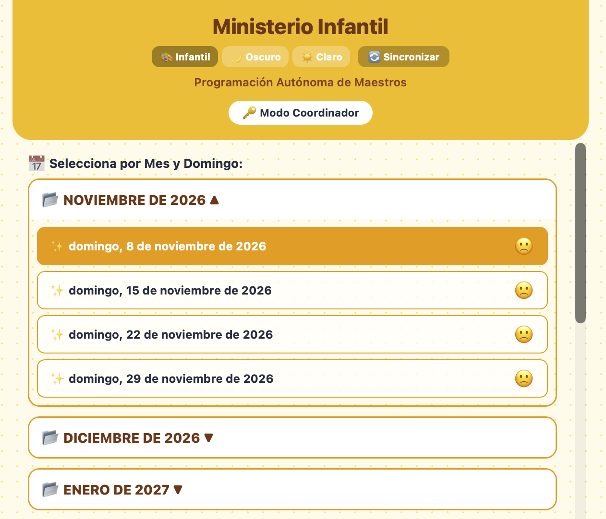

01 / EDUCACIÓN Y FORMACIÓN✳

MINISTERIO INFANTILMinisterio Infantil
Una plataforma para coordinar la Escuela Dominical: organiza grupos, programa servicios y facilita el trabajo de responsables, maestros y auxiliares.
- Programación y asignación de equipos
- Gestión de grupos y perfiles
- Recursos, necesidades y coordinación